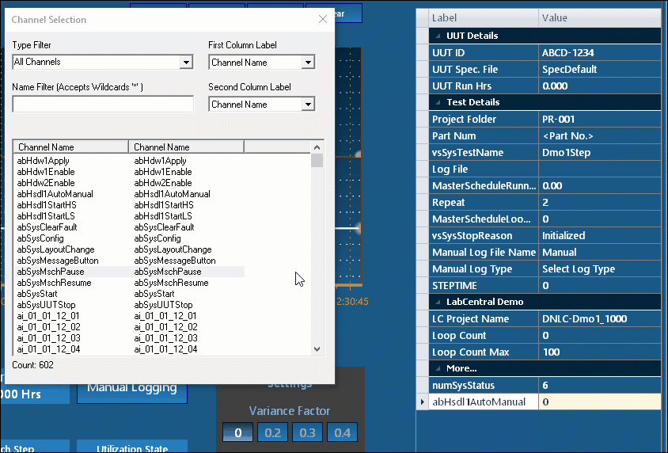

iTest User's Guide
The ChannelSelect.exe application launches a modeless version of the Channel Select dialog. The altered dialog will not display OK or Cancel selections, allowing users to select channels while interacting with other windows. This tool supports dragging and dropping channel selections to supported drop targets. It can also set a string channel to the selected channel name via the /ReturnChannel command-line argument.
Channel Select Dialog Descriptions
| Column | Description |
| Type Filter | List of available filters including channel type and module. |
| Name Filter | Filters the list of iTest channels to just those channels that contain the filter string. This field supports the following conditions: - To filter using a replacement symbol for one or more characters, use * anywhere in the name to represent or replace a series of characters. - To filter for the beginning of a channel name, use ^ as a prefix before the name. - To filter for the end of a channel name, use $ as a suffix after the name. |
| First Column Label | Click the drop-down menu to set the first column label to one of the following: Channel Name, Customer Name, Module Name. |
| Second Column Label | Click the drop-down menu to set the second column to one of the following: Channel Name, Customer Name, Module Name, Alias, Description. |
To sort channels by label, click on the first or second column header.
Channels can be selected singularly or multiple channels can be selected by using Ctrl + Left-click or Shift + Left-click.
Drag and drop selection is also supported, as shown below:
Drag and Drop

Valid drag and drop targets include:
Example Mailslot Messages:
\\.\mailslot\FileServices>>$Execute;ChannelSelect.exe\\.\mailslot\FileServices>>$Execute;"ChannelSelect.exe /ReturnChannel vsSysChannelName"
If specified, double-clicking a channel name will set the specified return channel to the name of the clicked channel. ChannelSelect.exe will then exit.
Syntax:
ChannelSelect.exe /ReturnChannel <channel_name>
Parameters:
channel_name: The name of a string channel that will be set to the selected channel name